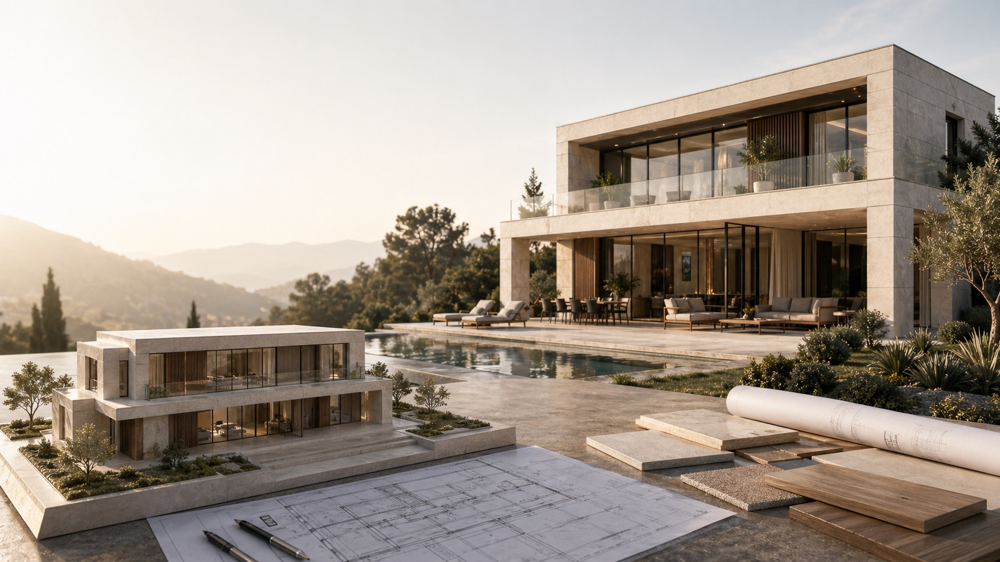
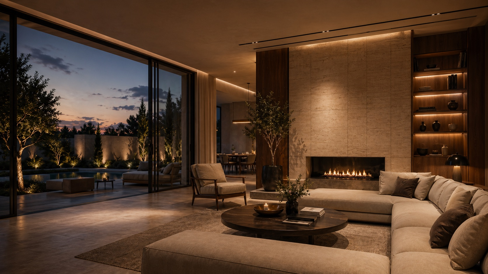

Şeffaf İletişim
Sürecin her aşamasında açık ve net iletişim.

Çalışma Süreci
Projenizin başından sonuna kadar takip ettiğimiz sistematik süreç; ihtiyaç analizi, konsept tasarım, projelendirme, uygulama ve teslim sonrası destek adımlarından oluşur.
Sürecin her aşamasında açık ve net iletişim.
Zamanı ve bütçeyi doğru yöneten planlama.
En yüksek standartlarda uygulama ve kontrol.
Zamanında teslim ve sonrasında kesintisiz destek.
İşlev programı, kullanıcı profili, bütçe ve zaman hedeflerini birlikte netleştiriyoruz. Mevcut alanın ölçüm ve yerinde keşfini yapıp ihtiyaç programı, metraj ve kapsamı raporluyoruz.
Yaratıcı fikirler ve uygulanabilir çözümler geliştiriyoruz. Bu aşamadaki çıktılar tasarım kararları ve uygulama planı için ortak referans olur.
Detaylı teknik çizimler ve uygulama planları hazırlıyoruz. Maliyet, zaman ve kalite hedefleri bu aşamada netleşir.
Şantiye yönetimi ve kalite kontrolü ile projeyi hayata geçiriyoruz. Tasarım kararları sahada doğru detay ve işçilikle uygulanır.
Proje teslimi ve uzun vadeli destek sağlıyoruz. Teslim sonrasında da ihtiyaç duyduğunuz konularda yanınızda olmaya devam ediyoruz.

Ücretsiz Ön Görüşme